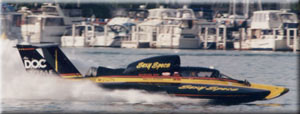

Unlimited Hydroplanes
The Chrysler Jeep Detroit APBA Gold Cup
Unlimited Light Hydroplanes
Between the 5 Litre and Unlimited classes, with big-block V-8's.
Jersey Speed Skiffs
Not really a Hydroplane, and also rather new to our event
Outboard Performance Inflatables
An exciting developing class, part of our event since 1997
Vintage and Historic Race Boats
Exhibition runs Saturday and Sunday
Mini Gold Cup
Radio-control models - Race held in early May